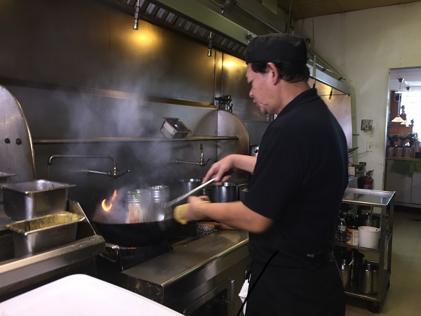

Authentic Family Restaurant
44928 Ford Rd., Canton, Michigan
(734) 459-8424
Lai Thai is owned by the Thanupakorn Family. The restaurant opened in 1996 and was one of the only Thai restaurants in Canton, Michigan for many years. It has always been located at 44928 Ford Rd., Canton, Michigan. Kung Thanupakorn cooks when the restaurant is busy, otherwise he's out shopping for fresh ingredients, making sure the restaurant is fully stocked with the fresh essential herbs and spices and vegetables. The restaurant's delicious meals touch on all the aspects of Thai cuisine. There's the traditional Pad Thai, but also a large selection of curries blended with coconut milk.

Cake Thanupakorn and her oldest daughter Panida lend a hand on busy nights.